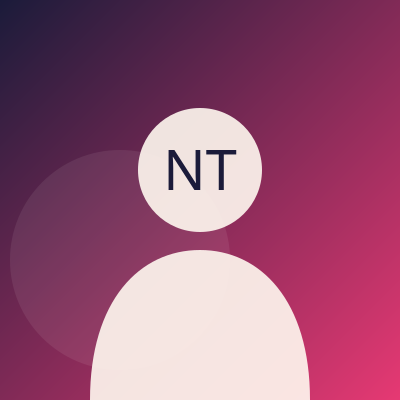
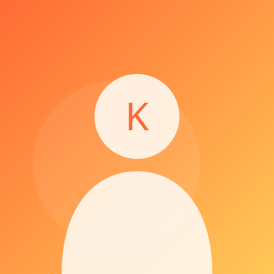
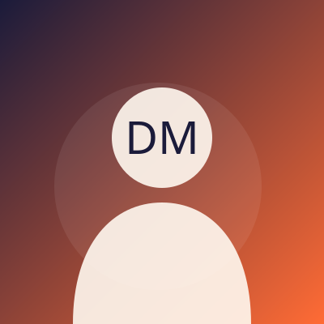
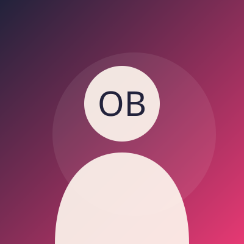
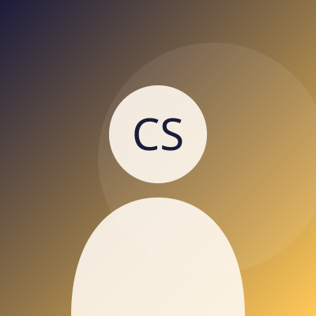
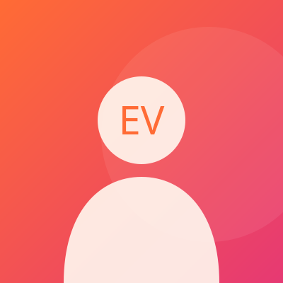

Nova Tides
Ven. 9 juillet Électro-pop
Duo lyonnais aux synthés lumineux et aux refrains qui restent en tête. Leur premier album, Marées hautes, a tourné en boucle sur toutes les playlists de l'été.
Festival Horizon 2027
Trois jours, deux scènes, huit artistes. Découvrez celles et ceux qui feront vibrer Horizon cet été.

Ven. 9 juillet Électro-pop
Duo lyonnais aux synthés lumineux et aux refrains qui restent en tête. Leur premier album, Marées hautes, a tourné en boucle sur toutes les playlists de l'été.
Ven. 9 juillet Rock
Quatre musiciens, des guitares saturées et une énergie brute sur scène. Le groupe grenoblois revient avec un live taillé pour les grands espaces.

Sam. 10 juillet R&B / Soul
Une voix chaude, des textes intimes et une production soignée. Kalia mélange soul old-school et sonorités actuelles depuis son EP Lumière basse.

Sam. 10 juillet House
Résident des clubs marseillais, il signe des sets house solaires qui tiennent le public jusqu'au bout de la nuit. Rendez-vous pour la clôture du samedi.

Sam. 10 juillet Rap
Flow précis et instrus sombres : la nouvelle tête du rap francophone sort enfin de l'ombre avec un premier album très attendu.
Dim. 11 juillet Afro-pop
Entre rythmes afro et mélodies pop, Sola Mars transforme chaque concert en fête géante. Impossible de rester immobile.

Dim. 11 juillet Folk
Banjo, harmonica et voix éraillées : un folk chaleureux venu de la Drôme, parfait pour le coucher de soleil sur la scène Horizon.

Dim. 11 juillet Chanson
Piano-voix et textes ciselés : Elio Varenne fait le pont entre la chanson française et la pop moderne. Le concert de clôture du festival.